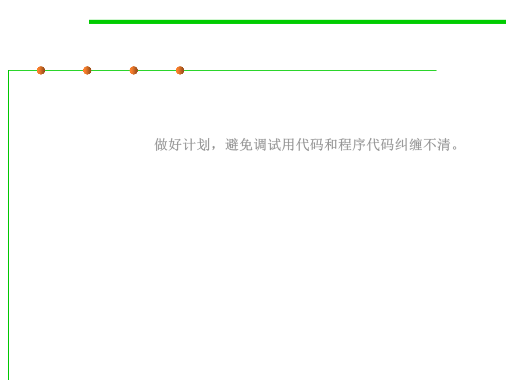

7.3 Assertions and Defensive Programming
Debugging Aids: Plan to Remove Debugging Aids
▪ In commercial software, leaving all the debugging code in the
program will cause that the performance penalty in size and speed
can be prohibitive. Plan to avoid shuffling debugging code in and
out of a program. 做好计划，避免调试用代码和程序代码纠缠不清。
– Use version control and build tools like make
• Version-control and build tools(like git, svn, ant, make…) can build different
versions of a program from the same source files.
• In development mode, you can set the build tool to include all the debug code.
• In production mode, you can set it to exclude any debug code you don’t want in
the commercial version.
– Use a built-in preprocessor
• If your programming environment has a preprocessor—as C++ does, for
example—you can include or exclude debug code at the flick of a compiler
switch.
• You can use the preprocessor directly or by writing a macro that works with
preprocessor definitions.